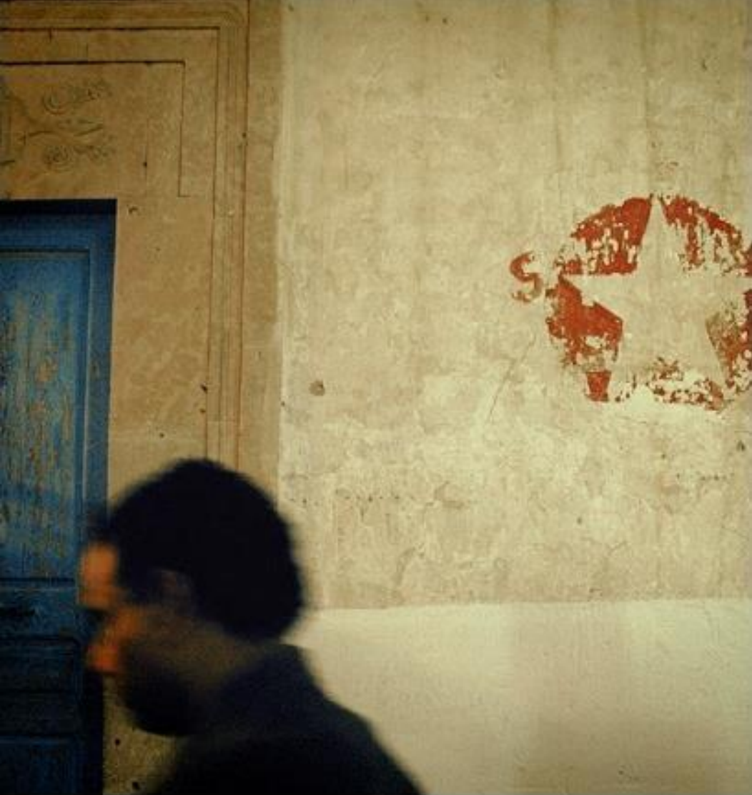

困在無人街道個把鐘頭後，終於被我們欄到了一輛救星。
叫囂中上了午夜的疲憊公車，任由異國的公車在石磚路上一路顛簸地狂奔著，在不夜的城中疾駛向火車站。
耳朵裡還迴響著剛結束沒多久的U2演唱會，這幾乎是我看過地球上最誇張的演唱會了。
突然被公車上一陣嚅囁的歌聲打斷，那是一個男人自顧自地哼著hey, jude，披頭四的名曲。
沒想到這個歐陸半島上，喜愛的歌，也跟東亞小島的我們沒有兩樣。
忽然想起，這個午夜是約翰藍儂的70冥誕了。
車開快，涼風吹進車裡，前面不遠就是下榻的飯店了。
生日快樂，愛音樂的靈魂。
有關十月九號，
翻出了一篇2007年的文章，和我一起回頭看看吧:)
十月九號。至少還沒有誰能奪走我們作夢的自由。
阿信 2007-10-09 13:49:48
photo by ashin 2007
時間都是發生這一天，十月九日。有關於一個傳說的殞落，和一個傳說的崛起。
「不要發抖，像個男人！」身中數槍，睜大雙眼，下腹與腿部已經浸滿了濃厚沈重血液的他，這樣對負責行刑的劊子手吼著。然後他拉開襯衫，指著自己的胸膛要求最後一槍。
photo by ashin 2007
整整四十年前，歷史上的今天，那個胸部中彈，倒在血泊中斷氣的男人，已經成為全球的超級偶像。他的照片與畫像，掛在服飾店，餐廳，或是顏色搶眼的踢恤上。不斷的有紀念或討論他的文章或是電影。雖然，他沒有命去看到世界的改變。
而負責行刑的劊子手，以經是又窮又瞎的老兵，但，四十年前奉命槍斃傳奇人物的這一幕，始終鮮明的刻印在他的腦海中，陪伴他行走在數十年黑暗中。

photo by ashin 2007
我們把手上的時光機，再往前撥二十七年，一樣是今天，地點設定在英國的利物浦，你就會聽到一個嬰兒誕生的哭聲，從街角的窗戶飄出來。
這個聲音，將會為全世界演唱許多最知名的反戰歌曲，裝進 mp3 隨身聽流傳到世界的每一個角落，你甚至可能會在駐守伊拉克的英美士兵身上找到。如果今天英國首相宣布的撤軍計畫順利，明年的今天，他們可能已經回到自己的家鄉，在酒館裡喝著啤酒聽這些歌曲。

photo by ashin 2007
或者這是兩個與我們不相干的歷史片段，發生在地球上非常遠離我們的兩端。而他們都是發生在歷史上的今天，十月九日。剛從東京回來，台北是陰天，不過沒有下雨。對我來說，除了洋基隊打完了這個球季的最後一場比賽，今天還算是不錯的日子。
photo by ashin 2007
回到二零零七，日前，瞎眼的老兵接受了免費的眼科義診，重新回到光明的世界，走完他昏黃的殘年。讓他重見光明的免費醫療，正是他槍下的亡魂切格瓦拉的理想之一。
歷史像是輪迴，或是諷刺，尤其當我們無厘頭把它們拼貼在一起。或者我們微笑而帶一點感觸的說，歷史是一個有犧牲有流血的，真實的伊索寓言。
二零零七年的十月九日的這一刻，至少還沒有誰能奪走我們作夢的自由。